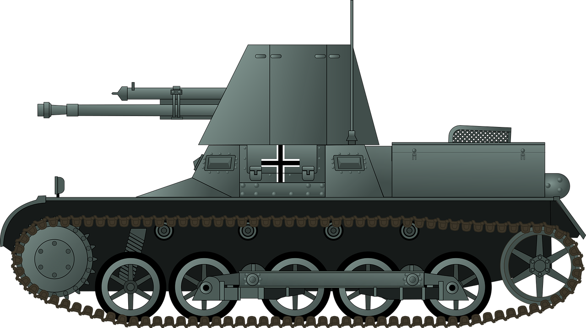
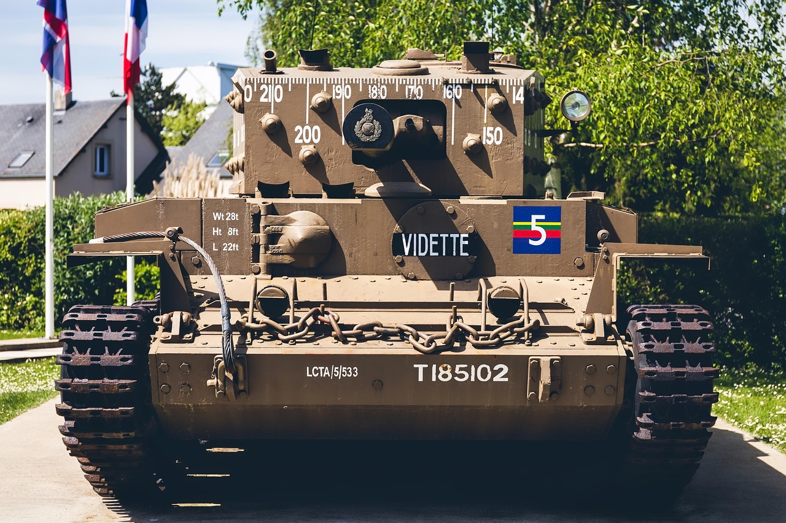
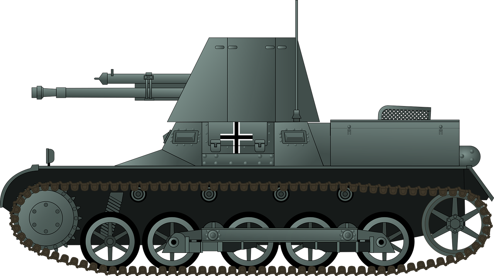
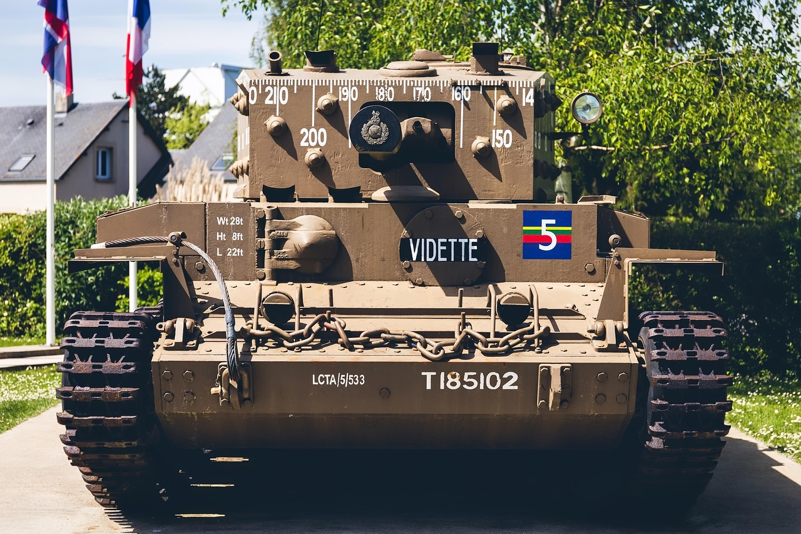

Disclaimer
Bien que l'auteur parle dans son site de matériel militaire, il tient
à vous dire qu'il ne soutient aucunement les conflits passés, présents
ou avenir du monde entier.
Merci et bonne lecture.
Bien que l'auteur parle dans son site de matériel militaire, il tient
à vous dire qu'il ne soutient aucunement les conflits passés, présents
ou avenir du monde entier.
Merci et bonne lecture.
De tout temps, l'homme a cherché un moyen de dominer son prochain créat des armes toujours plus puissantes. A l'antiquité déjà on avait appris à utiliser les chevaux pour améliorer le potentiel des soldats, donnant ainsi naissance à la cavalerie. puis on a attaché aux chevaux des chariots, permettant ainsi d'embarquer un soldat qui était concentré sur la conduite du chariot, et un deuxième soldat concentré sur le combat à l'arc ou à la lance. Le premier char était né. On retrouvait cette arme dans les grandes puissances militaire de l'antiquité telles que l'Empire Romain, les Egyptiens ou même les grecs.
Néanmoins son utilisation va peu à peu disparaître durant le Moyen-Age au profit de la cavalerie traditionnelle. Il faudra attendre la première guerre mondiale pour que le char refasse son apparition avec de nombreuses modifications cepandant. Les chevaux qui tiraient autrefois le chariot sont désormais remplacés par un puissant système de motorisation, les roues en bois sont désormais en métal, fixées a des suspensions et entourées de chenilles afin d'augmenter les capacités tout-terrain du véhicule. La lance et l'arc ont laissés place à un canon d'artillerie placé dans la casemate ou dans des compartiments spéciaux. malgré ces modernisations, les premiers chars développés sont limités à des rôles d'accompagnement d'infanterie, et ne jouissent pas de la liberté d'action de leurs ancêtres. A la fin de la grande guerre on voit apparaître le premier char d'assaut avec le canon placé sur une tourelle rotative à 360°.

Au début de la Seconde Guerre Mondiale, toutes les nations dominantes du monde et plusieurs petits pays ont inclus les chars dans leur matériel militaire. Leurs utilisations sont alors très variées. Certains pays aux doctrines conservatrices limitent l'utilisation du char à un rôle d'accompagnement d'infanterie comme dans la guerre de 14-18 (tel que la France et la Grande Bretagne), d'autres s'en servent plus comme des unités indépendantes au même titre que l'infanterie ou l'aviation (exemple : l'Allemagne), d'autres mélangent les différentes doctrine en fonction du blindé (comme l'URSS). Quel que soit la manière dont il est utilisé, le char à un rôle majeur dans la guerre, que ce soit en tant que véhicule militaire ou en tant qu'outil de propagande.
 



Aujourd'hui le char moderne n'est plus aussi diversifié qu'avant, mais il reste une unité à part entière de l'armée terrestre de beaucoup de pays. Certains disent qu'avec l'apparition des drones son existence est mise en péril, d'autres disent qu'au contraire le char trouvera le moyen de s'adapter à ces nouvelles conditions de combat.
Même s'il n'est plus la grande arme de propagande qu'il a pu être lors de la deuxième Grande Guerre, le char reste assez présent dans la culture populaire, que ce soit au travers des jeux (tels que World Of Tanks, War Thunder, Tank Company, Modern Warfare Tanks Battle, ...), des animés (Girl Und Panzer, Valkyria Chronicles), des films (Fury, Tankers, T-34, ...) ou même sous forme de jouets et maquettes.